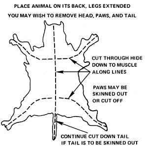

Real fur is warm and wonderful and we like to make it a part of our life . . . but-to us, anyway-the idea of ripping off a forest brother for his hide is monstrous. In our experience, it's also quite unnecessary: An amazing number of creatures are run over on country roads, leaving behind beautiful pelts that usually go to waste.
Two-lane blacktops (like the one which goes past our farm) are ideal hunting grounds for "volunteer" furs, since an animal hit on such a road is often killed at a fairly low speed, and its skin is left virtually undamaged. Most such accidents occur at night, because of poor visibility for the driver and the higher volume of four-footed traffic across the road after the sun goes down. Early morning-before any killed animal has been run over a second time and its coat ruined-is a good time to go out looking.
The same rule applies to fur gathering as to ordinary fur trapping: Don't begin saving pelts until the weather turns good and cold in the fall, and stop as soon as it starts to warm up in the spring. If you have a cat or dog, you've doubtless noticed the annual changes in its coat. It follows, then, that winter finds are thicker and free of summer pests and parasites. Also, decomposition is no real problem during nippy or frigid weather. We often just put an accident victim in the trunk of our car and skin it when we get home several hours later.
We find more raccoons on the highway than anything else, but all sorts of creatures turn up once you start looking. Some friends of ours even "bagged" a deer this way once. If luck like that comes your way, however, you'd better check your state's wildlife code before you collect the body. Picking up even a dead deer without a license is a bustable offense in some places. Also steer clear of any animal that's not normally found on the roads in your area. Unusual behavior (including walking in front of automobiles) is sometimes a sign of rabies.
The animals you collect will, of course, have to be skinned . . . which isn't nearly as complicated a job as we thought it would be. It is kind of sloppy, though, and best done outdoors. Be sure to wear rubber gloves as a simple precaution against all the diseases you've heard such terrible tales about . . . and be sure, also, to provide yourself with a good sharp knife. Those great big Jim Bowie jobs are OK for kodiak bears, but a simple pocketknife finely honed is more efficient for most of the moderate sized furbearers you'll handle.
To begin skinning, make the cuts shown in the drawing, lift up the edge of the hide, and proceed to cut through the membrane that holds the skin to the flesh. The technique is self-explanatory once you get into it. Just don't try to hurry . . . the idea is to loosen the pelt from the carcass gradually, without tearing the hide or poking a blade through it.
A pelt taken for commercial use these days is generally just a rectangular "fillet" cut from the back, where the fur thickest. Nevertheless, it's possible to skin out the head, tail and even paws of an animal (although a bit of patience required to loosen the hide from these more detailed parts of the body).
Once the pelt is off, salt it down to preserve it until you have several to tan all at once. This means laying the skin out flat, flesh side up, and rubbing it thoroughly with ordinary table salt . . . enough so that some is left loose on the surface to absorb moisture. Pelts so treated will keep just about indefinitely. Store them flat, fur side down, until they're completely dry. Then they may be turned over or stacked.
The final step is to tan the hide (a process that both retains the fur and leaves the underlying skin soft and flexible). Some research in the library will probably turn up some good home tanning methods . . . but we've had quite satisfactory result with a kit available for $5.00 from the U-Tan Company, 28 Paris St., Newark, N.J. 07105. The materials included will treat five raccoon skins or an eqivalent number of other hides.
How you use the finished pelts is up to you and your imagination. We're saving ours to make a big fur "quilt". It 's a shame that so many creatures die as a result of man's careless high-speed scramble across their territory . . . but it's kind of nice that their lovely fur, at least, can be preserved, used, and appreciated.
|
|
 |
|